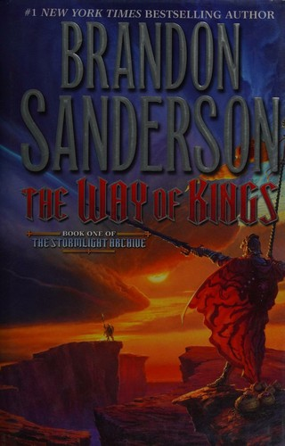

The Stormlight Archive: Sanderson at His Absolute Best

The Way of Kings and everything after it. This is Sanderson operating at the top of his range, and it's the highest score on this entire site outside of Dungeon Crawler Carl.
Right up there with Mistborn
I've said Mistborn might be the most fun the Cosmere has been for me, and I stand by that — but Stormlight is the one I'd call his best work. Bigger scope, heavier characters, and the kind of long-game setup that pays off so hard it reframes things you listened to weeks earlier.
The commitment
These are massive books, and I mean massive. On audio that's a feature rather than a problem — it's weeks of drive time handled, and I never once wanted it to hurry up. Same deal I wrote about in Sanderson on Audio: the length stops being intimidating when you're listening instead of staring down a brick.
9.8/10. If you only ever take one Sanderson recommendation off this site, make it this one.